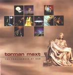

| Artist: | Torman Maxt |
| Title: | The Foolishness Of God |
| Label: | Mars Hill Records |
| Length(s): | 54 minutes |
| Year(s) of release: | 2001 |
| Month of review: | [03/2002] |
| 1) | Vanity Explored | 4.54 |
| 2) | Ghost Town | 3.15 |
| 3) | City Of Man | 5.15 |
| 4) | The Stage | 3.24 |
| 5) | Space And Time | 5.06 |
| 6) | Off This Planet | 2.13 |
| 7) | The China Song | 6.49 |
| 8) | 40 Days | 3.59 |
| 9) | Life Sketches III: Sin | 1.43 |
| 10) | Silence Isn't Golden | 3.34 |
| 11) | Life Sketches IV: Eternity | 2.45 |
| 12) | The Foolishness Of God | 10:46 |
Fast guitars and drums open City Of Man, the first of five tracks of the second chapter External Perspectives. After this fast paced intro the song goes back quite a bit in pace. The guitar sound sometimes reminds of me of Oldfield. The influences of the classic seventies rock bands are strong on this driven track. I especially liked the conclusion to Arrival with its fastily delivered vocals. After an acoustic interlude, with some nice tension building, we move into the final stage of this track, which reintroduces the manic guitars of the opening. The playing is good here as the band rages on. Most striking continues to be the fact that the band manages to play music that may seem quite straightforward, but when you listen closely, this is only because the band is able to hide its complexity and variedness well. This serves to make the music seem natural.
The Stage is similar to Vanity Explored, because of the similarities between the choir vocal style, but also with more intricately constructed vocal parts. The vocal lines are good and memorable. Space And Time concerns itself with the origin of life, more specifically that the arrogant scientists are on the wrong track. Oh well. The music is more important, at least to me, and shows the band playing the same game as before: alternating vocal styles, both high and low, varied drums and a strong rhythm guitar presence. The music is driven and again enjoys a good groove. Off This Planet continues with dreamy keyboards and acoustic guitar.
The China Song continues the album with a rather easy-going track in which the spoken word figures also quite strongly. I am not always too happy with the lyrics, which can be quite judgmental of people "who do not believe". Of course, I have my views on the matter, but do not feel this is the place to discuss them.
From The Inside Part 2 has a tribal feel with a strong bass undercurrent and some rather bleepy and noisy keyboards and guitars. The song does harken back to From The Inside Part 1. Life Sketches III: Sin is a short one with an active guitar and somewhat Middle Eastern sounding melodies. After a complex acoustic guitar part they return with a guitar screaming out. A potent brew. The final part of From The Inside Part 2 is Silence Isn't Golden, which enjoys a catchy but short chorus. Agan, the music has a very good drive, but alos plenty of variation, because of the more relaxed verses and the distinctive transition to the chorus. A great track.
Foolishness is the final chapter, with the soothing Life Sketches IV: Eternity. The final track is the epic title track, which is very much in the Rush style (both vocals and music). At times the music winds down, as for instance in Faith & Foolishness, but only a little later the band rages on again. All in all a strong finale and in fact, it really sounds like a finale.